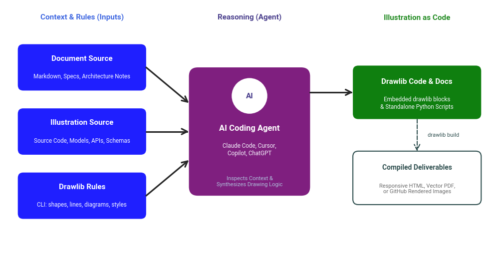
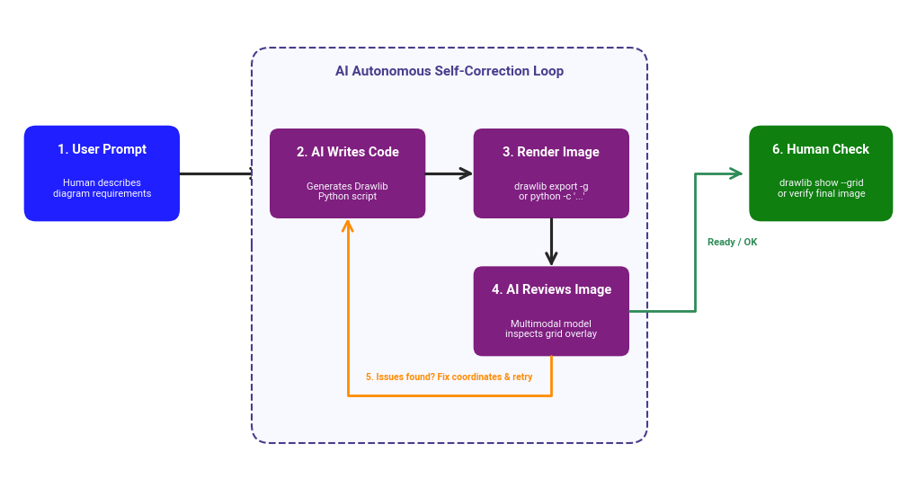

Working with AI Coding Agents & LLMs
Drawlib is built on the philosophy of "Illustration as Code". Unlike proprietary GUI tools (Draw.io, PowerPoint, Miro) whose binary or complex XML formats are opaque to language models, Drawlib diagrams are expressed in standard, readable Python code.
This architecture enables AI coding agents (such as Claude Code, Cursor, GitHub Copilot, Gemini, and ChatGPT) to generate, inspect, and refactor technical diagrams using the exact same programming workflows used for software development.
1. Why Drawlib & AI Agents?
Illustration as Code in the Same Repository
To maximize an AI agent's capability, we strongly recommend installing Drawlib directly within your core application repository or technical documentation repository, rather than isolating it in a separate drawing repository.
When Drawlib lives alongside your source code:
- Agents understand your domain context: An agent can inspect your actual database models (
models.py), API schemas (openapi.yamlor routes), directory structures, and business logic before drawing a single box. - Accurate, reality-grounded diagrams: Instead of generic mockups, the agent generates architecture diagrams, ER diagrams, and sequence diagrams that faithfully mirror your actual implementation.
- Single Pull Request updates: When code changes (e.g. adding a new microservice or database column), an agent can update both the implementation code and the corresponding Drawlib diagrams in the same commit.

Source Code
from drawlib.canvas import setup
from drawlib.colors import Colors, Colors140
from drawlib.fonts import FontRoboto
from drawlib.lines import line
from drawlib.shapes import circle, rectangle
from drawlib.text import text
from drawlib.types import Style
from drawlib.config import styles
setup(width=140, height=75)
# Styles
s_input = styles.blue_flat
s_agent = styles.purple_flat
s_output = styles.green_flat
s_build = styles.white.patch(shape_line_color=Colors140.DarkSlateGray, shape_line_width=1.5)
ts_title = Style(text_size=11, text_font=FontRoboto.ROBOTO_BOLD, text_color=Colors.White)
ts_desc = Style(text_size=8.5, text_font=FontRoboto.ROBOTO_REGULAR, text_color=Colors140.GhostWhite)
ts_dark_title = Style(text_size=10, text_font=FontRoboto.ROBOTO_BOLD, text_color=Colors140.DarkSlateGray)
ts_dark_desc = Style(text_size=8, text_font=FontRoboto.ROBOTO_REGULAR, text_color=Colors140.DimGray)
# Column Headers
text((23, 70), "Context & Rules (Inputs)", style=Style(text_size=11, text_font=FontRoboto.ROBOTO_BOLD, text_color=Colors140.RoyalBlue))
text((70, 70), "Reasoning (Agent)", style=Style(text_size=11, text_font=FontRoboto.ROBOTO_BOLD, text_color=Colors140.DarkSlateBlue))
text((117, 70), "Illustration as Code", style=Style(text_size=11, text_font=FontRoboto.ROBOTO_BOLD, text_color=Colors140.ForestGreen))
# 1. Inputs (Left column)
rectangle((23, 56), width=36, height=13, style=s_input, r=1.5)
text((23, 58.5), "Document Source", style=ts_title)
text((23, 53.5), "Markdown, Specs, Architecture Notes", style=ts_desc)
rectangle((23, 38), width=36, height=13, style=s_input, r=1.5)
text((23, 40.5), "Illustration Source", style=ts_title)
text((23, 35.5), "Source Code, Models, APIs, Schemas", style=ts_desc)
rectangle((23, 20), width=36, height=13, style=s_input, r=1.5)
text((23, 22.5), "Drawlib Rules", style=ts_title)
text((23, 17.5), "CLI: shapes, lines, diagrams, styles", style=ts_desc)
# 2. Central Agent
rectangle((70, 38), width=34, height=36, style=s_agent, r=2.5)
circle((70, 48), radius=5, style=styles.white.patch(shape_line_color=Colors.Transparent))
text((70, 48), "AI", style=Style(text_size=11, text_font=FontRoboto.ROBOTO_BOLD, text_color=Colors140.DarkSlateBlue))
text((70, 39), "AI Coding Agent", style=Style(text_size=12, text_font=FontRoboto.ROBOTO_BOLD, text_color=Colors.White))
text((70, 33), "Claude Code, Cursor,\nCopilot, ChatGPT", style=ts_desc)
text((70, 24), "Inspects Context &\nSynthesizes Drawing Logic", style=Style(text_size=8, text_font=FontRoboto.ROBOTO_REGULAR, text_color=Colors140.LightSteelBlue))
# Arrows from Inputs to Agent
line((41, 56), (53, 46), arrowhead="->", style=styles.bold)
line((41, 38), (53, 38), arrowhead="->", style=styles.bold)
line((41, 20), (53, 30), arrowhead="->", style=styles.bold)
# 3. Output (Right column)
rectangle((117, 49), width=36, height=15, style=s_output, r=1.5)
text((117, 52), "Drawlib Code & Docs", style=ts_title)
text((117, 46), "Embedded drawlib blocks\n& Standalone Python Scripts", style=ts_desc)
# Arrow from Agent to Code Output
line((87, 49), (99, 49), arrowhead="->", style=styles.bold)
# 4. Publication Output
rectangle((117, 25), width=36, height=15, style=s_build, r=1.5)
text((117, 28), "Compiled Deliverables", style=ts_dark_title)
text((117, 22), "Responsive HTML, Vector PDF,\nor GitHub Rendered Images", style=ts_dark_desc)
# Arrow from Code to Deliverables
line((117, 41.5), (117, 32.5), arrowhead="->", style=Style(line_style="dashed", line_width=1.5, line_color=Colors140.DarkSlateGray))
text((120, 37), "drawlib build", style=Style(text_size=8, text_font=FontRoboto.ROBOTO_REGULAR, text_color=Colors140.DarkSlateGray, text_halign="left"))
2. Equipping Your Agent with Drawlib Rules
AI agents perform best when provided with concise, high-signal architectural rules rather than raw API dumps. Drawlib includes a built-in rules distribution engine (drawlib rules) tailored for LLMs.
Step 1: Initialize Base Rules for Your Agent
Dumping full specifications for all 10+ Drawlib modules into your project rule file would consume too many context tokens. Instead, export the overview rule, which gives your agent a complete mental model and an index of available tools:
# For Cursor (.cursorrules):
uv run drawlib rules show overview > .cursorrules
# For Claude Code (CLAUDE.md):
uv run drawlib rules show overview >> CLAUDE.md
# For Windsurf (.windsurfrules) or custom LLM system prompts:
uv run drawlib rules show overview > .windsurfrules
Step 2: Enable On-Demand Rule Lookup
The overview rule instructs your agent to autonomously fetch detailed rules when needed. When prompted to create a specific illustration, the agent will dynamically run:
# Shapes primitives (rectangles, circles, polylines, chevrons):
uv run drawlib rules show shapes
# Connections, routing, and arrowheads:
uv run drawlib rules show lines
# High-level domain diagrams (Architecture, Sequence, Flow, ER, Class):
uv run drawlib rules show diagrams
# Structured layout components (Tables, Trees, MindMaps, ChevronProcess):
uv run drawlib rules show smartarts
# Data visualizations and Gantt charts:
uv run drawlib rules show charts
# Visual style matrix and color palettes:
uv run drawlib rules show preset_styles
This keeps your agent's initial prompt lightweight while granting it instantaneous access to exhaustive API signatures and production code patterns on demand.
3. Prompting Best Practices for Stable Layouts
When asking an LLM to generate illustrations, follow these proven prompt patterns to avoid overlapping elements or distorted layouts:
A. Pre-Define Canvas Bounds
LLMs struggle with unbounded 2D coordinate spaces. Always provide or request an explicit canvas size first:
- Standard architecture / flow diagram:
setup(width=120, height=60) - Widescreen 16:9 system overview:
setup(width=160, height=90) - Small icon badge or process flow:
setup(width=80, height=40)
B. Prefer High-Level Components
Direct your agent to use domain-specific modules (diagrams, smartarts) rather than manually placing dozens of low-level geometric shapes:
- Microservices & Cloud: Use
ArchitectureDiagramorflow.FlowDiagram - APIs & Protocols: Use
SequenceDiagram - Data Models: Use
ERDiagramorClassDiagram - Workflows & Pipelines: Use
ChevronProcessorCycle
C. Use Style Presets Instead of Raw Colors
Instruct the agent to use Drawlib's semantic style presets (e.g. style="blue_flat", textstyle="white_bold", or MonochromeStyles()). This prevents mismatched color palettes and guarantees professional aesthetic consistency out of the box.
4. The Iterative Debug Loop with Coordinate Overlays (--grid)
If an agent's initial layout has slight misalignment or text clipping, do not guess coordinates. Use Drawlib's fast visual inspection tools with coordinate grids:
# Headless rapid export with coordinate grid overlay:
uv run drawlib export my_drawing.py -g -o scratch/preview.png
# Or inspect block 1 of a Markdown document with grid:
uv run drawlib export docs_src/diagrams/arch.md 1 -g -o scratch/arch_grid.png
Human-in-the-Loop Feedback
Inspect the grid image. You can give concrete coordinate feedback to your agent:
"The database box at (80, 25) overlaps with the message queue line. Shift the database to (95, 25) and increase canvas width from 100 to 120."
Multimodal Self-Correction
Modern multimodal models (such as Claude 3.7 Sonnet or Gemini 2.0 Pro) can inspect scratch/preview.png directly, read the superimposed coordinate axes, and fix their own layout without human intervention.

Source Code
from drawlib.canvas import setup
from drawlib.colors import Colors, Colors140
from drawlib.fonts import FontRoboto
from drawlib.lines import line, lines
from drawlib.shapes import rectangle
from drawlib.text import text
from drawlib.types import Style
from drawlib.config import styles
setup(width=150, height=80)
# Colors & Styles
s_human = styles.blue_flat
s_ai_step = styles.purple_flat
s_loop_bg = styles.white.patch(shape_fill_color=Colors140.GhostWhite, shape_line_color=Colors140.DarkSlateBlue, shape_line_width=1.5, shape_line_style="dashed")
s_final = styles.green_flat
ts_title = Style(text_size=10.5, text_font=FontRoboto.ROBOTO_BOLD, text_color=Colors.White)
ts_desc = Style(text_size=8, text_font=FontRoboto.ROBOTO_REGULAR, text_color=Colors140.GhostWhite)
ts_dark_title = Style(text_size=11, text_font=FontRoboto.ROBOTO_BOLD, text_color=Colors140.DarkSlateBlue)
# 1. Human Initial Prompt (Left, Y=51)
rectangle((17, 51), width=26, height=16, style=s_human, r=2.0)
text((17, 55), "1. User Prompt", style=ts_title)
text((17, 48.5), "Human describes\ndiagram requirements", style=ts_desc)
# Arrow from Human (1) to AI Code (2) - Straight horizontal
line((30, 51), (44, 51), arrowhead="->", style=styles.bold)
# Background container for AI Autonomous Loop (Center, X=75, Y=39)
rectangle((75, 39), width=66, height=66, style=s_loop_bg, r=3.0)
text((75, 68), "AI Autonomous Self-Correction Loop", style=ts_dark_title)
# Step 2: AI Writes Code (Top-Left of loop)
rectangle((58, 51), width=26, height=15, style=s_ai_step, r=1.5)
text((58, 54.5), "2. AI Writes Code", style=ts_title)
text((58, 48), "Generates Drawlib\nPython script", style=ts_desc)
# Arrow 2 -> 3 (Horizontal)
line((71, 51), (79, 51), arrowhead="->", style=styles.bold)
# Step 3: Render Image (Top-Right of loop)
rectangle((92, 51), width=26, height=15, style=s_ai_step, r=1.5)
text((92, 54.5), "3. Render Image", style=ts_title)
text((92, 48), "drawlib export -g\nor python -c '...'", style=ts_desc)
# Arrow 3 -> 4 (Vertical Down)
line((92, 43.5), (92, 35.5), arrowhead="->", style=styles.bold)
# Step 4: AI Reviews Image (Bottom-Right of loop)
rectangle((92, 28), width=26, height=15, style=s_ai_step, r=1.5)
text((92, 31.5), "4. AI Reviews Image", style=ts_title)
text((92, 25), "Multimodal model\ninspects grid overlay", style=ts_desc)
# Step 5: Loop Back Arrow (4 -> 2, Bottom-Left orthogonal routing)
lines([(92, 20.5), (92, 14), (58, 14), (58, 43.5)], arrowhead="->", style=Style(line_color=Colors140.DarkOrange, line_width=2))
text((75, 17), "5. Issues found? Fix coordinates & retry", style=Style(text_size=7.5, text_font=FontRoboto.ROBOTO_BOLD, text_color=Colors140.DarkOrange))
# Arrow out of loop (from Step 4 to Step 6, orthogonal)
lines([(105, 28), (116, 28), (116, 51), (124, 51)], arrowhead="->", style=Style(line_color=Colors140.SeaGreen, line_width=2))
text((118, 39.5), "Ready / OK", style=Style(text_size=8, text_font=FontRoboto.ROBOTO_BOLD, text_color=Colors140.SeaGreen, text_halign="left"))
# 6. Human Final Inspection (Right, Y=51)
rectangle((137, 51), width=24, height=16, style=s_final, r=2.0)
text((137, 55), "6. Human Check", style=ts_title)
text((137, 48.5), "drawlib show --grid\nor verify final image", style=ts_desc)
5. Sample Agent Prompts
Prompt: Microservices Architecture Diagram
Inspect the services defined in `src/services/` and `docker-compose.yml`.
Using Drawlib, generate a clean microservices architecture diagram showing:
1. Client App / Gateway
2. Authentication Service and User DB
3. Order Processing Service and Redis Queue
Use `setup(width=140, height=70)`, standard preset styles ("blue_flat", "green_flat"), and `line(..., arrowhead="->")`.
Prompt: Sequence Diagram for API Flow
Check `src/api/auth.py` and draw a Drawlib Sequence Diagram (`drawlib.diagrams.sequence`)
showing the OAuth2 authorization code flow between User, Client App, Auth Server, and Resource API.
Save it as an embedded ```drawlib``` block in `docs_src/auth_flow.md`.
© 2026 drawlib by Yuichi Ito. Released under the Apache 2.0 License.